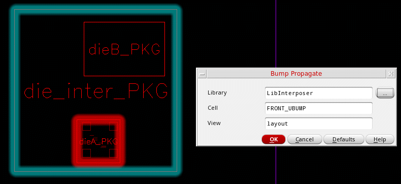

Propagating Bumps
Propagating bumps involves transferring information about bump locations and assignments from a source die to a target die. These are the two dies to be vertically stacked. Propagating bumps helps create aligned bumps in the two stacked dies.
In the following example, die1 is the source die from which bumps are propagated to the target die, an interposer. In the final design, die1 is stacked on the interposer.
The bumps in the target die are aligned to the bumps in the source die and are assigned the same connectivity based on the top level.
In the following example, the Die1 TILP is the source and the Interposer TILP is the target. All bumps are propagated from the source to the target and then to the interposer layout.
Propagation of bumps is an inter-die operation. Before you launch this command, move to the package or container tab in the Edit-In-Concert mode. Ensure that the following prerequisites are met:
- The selected source and target instances are directly stacked on each other. If not, use the Configure Module Stack form to update the ordering of the dies.
- All the source bumps are entirely within the boundary of the target design.
-
With the container or package layout open, enable Edit-In-Concert mode by selecting Module – Edit-In-Concert.
The package design is displayed on the first tab, and the layouts of the die instances in the package are displayed on separate tabs. - Click the container or package tab.
- Choose Module – Bump Management – Propagate Bumps.
- Select the source die instance.
-
Select the target die instance. The Bump Propagate form is displayed.
 - Specify the Library, Cell, and View of the bump cellview to be used to create bumps in the target instance.
All bumps are propagated from the source to the target cellview. The connectivity of the propagated bumps are automatically assigned as per the source. For bumps that do not have any connectivity in the source, no connectivity assignments are done in the target.
If the target is a TILP, in addition to the TILP, the bumps are automatically propagated to corresponding layout.
Related Topics
- Bump Propagate Form (form reference)
Return to top